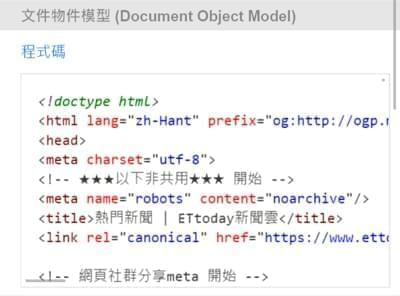
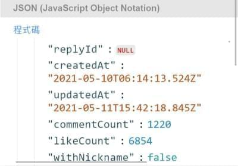
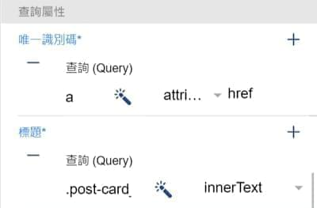

起初是想改善自己在手機上閱讀資訊的幾個效率問題，像是必須開啟很多 APP 和網頁，又或者花了大量時間在閱讀重複資訊…等，結果忍不住寫了個 APP 並實現了手機上的爬蟲。
想改善的問題
- 資訊來源駁雜：我個人喜歡看新聞、PTT、Dcard、小說、漫畫…等，而新聞有各家媒體，討論區也有各個版塊，每天要開啟的 APP 或網頁實在是太多了。
- 重複的資訊：例如早上和晚上看新聞，可能有一半的內容會是重複的，而這些已經讀過的內容對我來說是非必需的，甚至它都不該再次出現在畫面上。
解決辦法 - RSS
一款好的 RSS 閱讀器基本上可以解決這些問題，市面上的閱讀產品也已經非常成熟，但總有例外的時候，如果我們喜歡的資訊來源沒有提供 RSS 時該怎麼辦呢？網路上有許多開源的專案，讓大家自己架設 RSS Server，使用網路爬蟲的方式將指定內容轉換成 RSS 的格式，這樣就做到了所有東西都可以使用 RSS 閱讀的功能。
衍伸問題
RSS Reader + Server 看起來是一套很理想的解決方案，但無法避免的也提高了使用門檻，畢竟可想而知有多少人會為了 RSS 而自己架 Server，但如果能夠在手機上完成網路爬蟲功能是不是就好一點了呢？稍微 Google 了一下沒有看到類似的產品，所以就來自己開發一個吧。
專案架構
畢竟對網頁程式設計比較熟悉，最終還是選擇了以混合型開發框架來快速寫 APP，下面列出幾個比較重要的第三方技術。
- Ionic：畫面元件
- @capacitor-community/http：Native HTTP plugin
- DOMParser：解析 DOM 與 XML
- react-json-view：代碼檢視器
- Dompurify：去除 HTML 內的非必要元素
成果展示
使用者可以設定簡單的 Request 參數(Method、URL、Header)。
程式會抓取 Response body 並顯示於畫面中。
除了 DOM 外，還支援抓取 JSON 並高亮顯示。
可以使用 querySelector 對 DOM 或 JSON 中的元素進行搜尋，並取得該元素的 innerText、innerHTML、attribute 放入對應的 RSS 欄位中。
定義完爬蟲後，程式會根據規則把抓取資料形成列表。
結語
這個 APP 還額外的解決了我長久以來的問題，每次開發完爬蟲都要煩惱該怎麼檢視那些爬出來的資料，現在統統在手機上就可以搞定，而這也真正做到了意義上的打造個人閱讀器，畢竟看什麼資料都是由使用者決定，對這個 APP 感興趣的朋友可以去 RSSAny - 蜘蛛閱讀器 下載，雖然可能有很多 BUG 就是了。